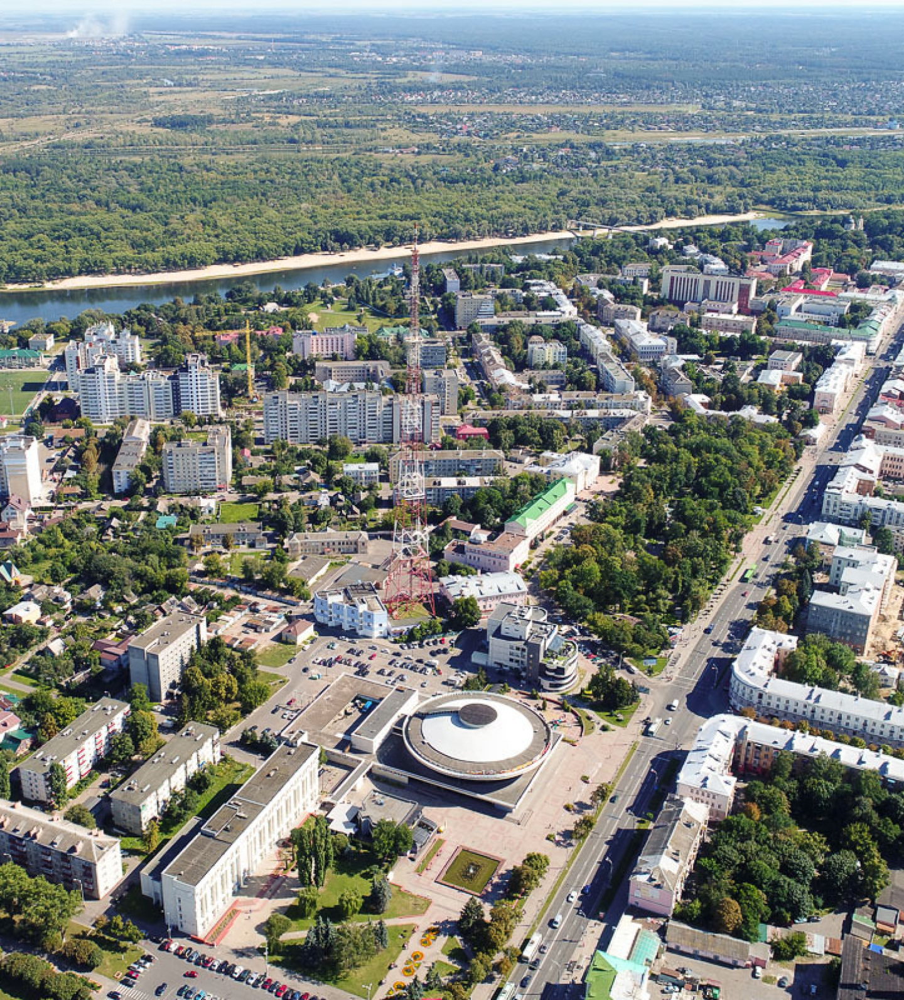
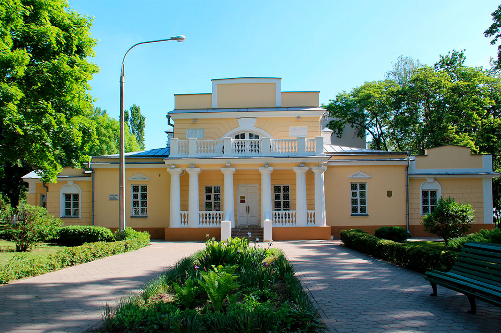

история города
Историки считают, что Туров был центром восточнославянского племени дреговичей, имевшего свое княжение еще до вхождения в состав древнерусского государства.
Впервые Туров упоминается в «Повести временных лет» под 980 годом: «Рогволод пришел из-за моря и имяше волость свою в Полотьске, а Тур Турове, от него же и Туровци прозвашася».
В Турове обрабатывали железо, дерево и кость, делали гончарные изделия, шили обувь, вырезали красивые украшения из драгоценных металлов. Городские купцы торговали с Киевом и другими древнерусскими княжествами.
Летописи говорят, что в конце Х века великий князь Киевский Владимир Святославич отправил своего сына Святополка править Туровом.
Известно, что в середине XII века при поддержке жителей Турова князем стал внук Святополка Юрий Ярославич, правивший с 1157-го по 1162 год. Но это сильно не понравилось киевскому князю Изяславу Давидовичу и в том же 1157 году он собрал сильное войско при поддержке смоленских, галицких и других княжеств и отправился в поход на Туров, рассчитывая захватить город с ходу. Однако Туров выстоял. Войска великого князя киевского приступили к продолжительной осаде, которая длилась 10 недель.
Благодаря исключительной стойкости жителей города и воинскому мастерству князя Юрия Ярославича, независимость Туровского княжества удалось отстоять. Следующий киевский князь также пытался подчинить своей власти Туров, но так же безуспешно.
Туров был не только большим политическим центром, но и одной из культурных столиц древнерусской земли. В самом начале ХІ века при Святополке в Турове была основана епископская кафедра. В городе, согласно летописи, на начало ХІІ века было около 40 церквей. Доподлинно известны, что там были Спасов и Богородицкий храмы или монастыри, Борисоглебский монастырь, Никольский монастырь, Варваринский монастырь, монастырь во имя св. Николая, Спасо-Троицкая церковь, Спасо-Преображенская церковь. Ильинская церковь, Петропавловская церковь, Всехсвятская церковь.
Центральной фигурой в те времена был епископ Туровской епархии Кирилл Туровский – активный просветитель и распространитель Христианства. Он создал и записал молитвы, проповеди и притчи, которые широко разошлись по древнерусским княжествам. Годом его рождения считается 1130, а смерти – 1186.
О высокой культуре Туровского княжества свидетельствуют археологические исследования, многие из которых подтверждают существование Туровской художественной школы. В 1865 году было найдено Туровское Евангелие – древний рукописный памятник XI века. Это самая ранняя (из сохранившихся) книга, созданная в Беларуси. Богато иллюстрированное Туровское Евангелие сегодня хранится в Вильнюсе, там же находится второе Туровское Евангелие середины XVI века, списанное с очень старого оригинала.
Красивый и величественный город Туров был разрушен в Рождество 1241 года монголо-татарами, убившими всех «от мала до велика» включая епископов, священников и монахов. Монголо-татары уничтожили все христианские святыни и монастыри. Туров пришел в упадок, епархию перевели в Пинск.
Красивый и величественный город Туров был разрушен в Рождество 1241 года монголо-татарами, убившими всех «от мала до велика» включая епископов, священников и монахов. Монголо-татары уничтожили все христианские святыни и монастыри. Туров пришел в упадок, епархию перевели в Пинск.
Сохранилось 58 текстов Кирилла Туровского. Уровень владения словом у него был такой, что его называли: «Златоуст, паче всех нам воссиявший на Руси». Современники восторгались красотой его слога и силой эмоционального воздействия. Творения великого гуманиста древности святителя Кирилла Туровского свидетельствуют всему миру о глубине корней христианской культуры Беларуси.
В 1993 году благодарные потомки установили памятник человеку, прославившему Туровскую землю, на самом высоком месте Турова – на Замковой горе.
Недалеко от этого места, на Борисоглебском кладбище, находится каменный крест, ставший сейчас местом паломничества. Он неожиданно появился из-под земли и до сих пор ежегодно увеличивается в высоту более чем на сантиметр. Есть несколько версий этого чуда, которое, как говорят, оказывает положительное действие, стоит только прикоснуться к нему. По одной из версий – крест один из трех, приплывших по Днепру и Припяти из Киева сразу после крещения Руси (два креста находятся в деревянной церкви Всех Святых). По другой версии, крест дает основания для раскрытия тайны захоронения Кирилла Туровского, которое до сих пор неизвестна.
Легенда вселяет надежду, что когда-нибудь откроются неизвестные факты о Кирилле Туровском и времени, в котором он жил.
Комплекс «Древний Туров»
Музей построен на месте древнего храма, разрушенного в 1230 году. После землетрясения от церкви, возведённой в 1170-х годах, остался только фундамент. На этом фундаменте, обнаруженном в 1961 году, и был сооружён стеклянный шатёр нынешнего музея.
Это самое большое здание на территории земель древней Руси, находящееся в западной его части. В музее можно посмотреть, как Туров выглядел раньше, а также познакомиться с обширной коллекцией приспособлений для ремесленного дела.

Памятник Кириллу Туровскому
Епископ Кирилл Туровский родился и проживал в Турове, поэтому в городе конечно же есть его монумент. Памятник был установлен в 1993 году на территории Замковой горы и выполнен из бетона, покрытого медью.
Скульптура представляет собой фигуру самого Кирилла Туровского с поднятой головой, а за фигурой находится крест византийской формы.
Высота памятника составляет 7 м. В левой руке епископ держит книгу, на обложке которой выгравирован крест, а правой рукой указывает на эту книгу.
Растущий из земли крест
Крест находится на Борисоглебском кладбище, которое расположено на берегу реки Язды. Поверхность креста выщерблена, а концы закруглённые.
Каменный крест начал расти из-под земли на территории кладбища в середине XX века. Однако, сначала никто не знал, что это крест, так как он имел вид обычного камня. Каждый год камешек становился всё больше и больше и приобретал форму креста. В 2001 году с ним и вовсе произошло необъяснимое событие: зимой, когда температура держалась на уровне -15, снег вокруг креста растаял и образовались лужи, да и сам камень был тёплым на ощупь.
Кроме того, городе существует поверие о том, что на территории Борисоглебского кладбища похоронены два сына князя Владимира-Крестителя. В смерти братьев считают виновным их сводного брата, являвшегося также и первым Туровским князем.

Краеведческий музей
Это самый старый музей Гомельской области, который был открыт в 1927 году. Основой для музея послужил кружок истории и природоведения одной из школ. На момент открытия коллекция галереи насчитывала больше сотни экспонатов.
Основателем, а по совместительству и первым директором музея был М.Е. Бруй. Кроме того, огромную роль в создании музея сыграл П.А. Щекотович – работник библиотеки Народного дома. Экспозиция галереи состояла из предметов археологии, старинных рукописных и печатных изданий, предметов обихода.
Однако в период Второй Мировой войны все экспонаты музея были полностью уничтожены. В 1949 году галерее выделили новое здание, а до этого времени она располагалась в личном доме самого Щекотовича. Сегодня музей включает в себя несколько экспозиций и выставочный зал, а количество экспонатов, выставляемых в галерее достигает одиннадцати тысяч.
«Туровский луг»
Город Туров богат не только своей историей, но и природными особенностями. На этой территории во время своего перелёта в тёплые страны останавливаются многие перелётные птицы, некоторые из которых вьют здесь и свои гнёзда. Именно поэтому на берегу реки Припять в 2008 году был открыт единственный на всей территории Беларуси негосударственный заказник «Туровский луг».
Каждый год из-за разливов заказник превращается в сеть островов, используемых многими птицами для своих колоний. На территории луга располагается единственная в стране станция кольцевания птиц. Каждый год Туров посещает множество туристов, желающих посетить заказник «Туровский луг», чтобы насладиться наблюдением за редкими птицами, занесёнными в Красную книгу.
Церковь Всех Святых
Этот храм располагается в деревянном доме, находящемся на одной из центральных улиц города.
Церковь была сооружена в 1810 году, однако примерно до 1930 года в неё проводились только заупокойные службы.
Кафедральный собор святителей Кирилла и Лаврентия Туровских
Возведение первого кафедрального храма в городе началось ещё в XII веке. Однако эту церковь разрушили в 13 веке в ходе татарских набегов. В начале прошлого столетия производили сбор средств для постройки нового собора, но Первая Мировая война, государственный переворот и другие немаловажные события, происходившие в этот период в стране, не позволили приступить к строительству.
К вопросу о возведении храма вернулись лишь в 2008 году, когда президент Беларуси выделил территорию для его строительства. В мае 2010 года заложили первый камень в базис будущей церкви. В следующем году был заложен фундамент будущей колокольни, а также на храм подняли купола и кресты. Собор освятили в 2013 году. Храм выполнен в древнем византийском стиле и имеет 9 куполов. Вместе с крестом высота собора составляет 32 м.